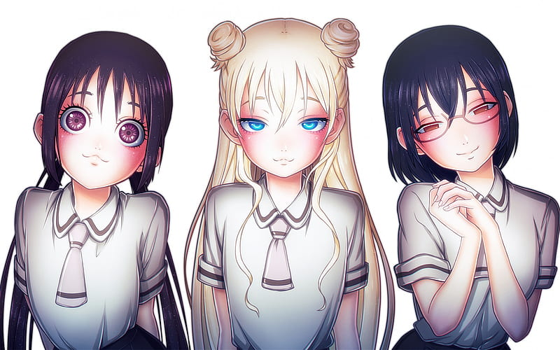
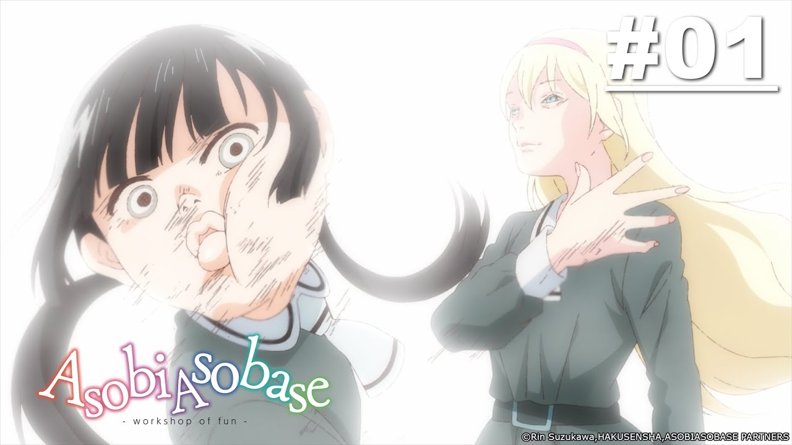

Abobi Asobase


ชมรมสาวรักสนุก
ชมรมสาวรักสนุก
นักเรียนชั้นมัธยมต้นปีสองในโรงเรียนหญิงล้วนและเป็นสมาชิกสามคน
ของชมรมศึกษานักละเล่นซึ่งไม่ได้เป็นชมรมอย่างเป็นทางการ
ชมรมนี้มีเป้าหมายที่คลุมเครือมาก กิจกรรมในชมรมมักเป็นอะไรบางอย่าง
ที่เรียกว่า "การละเล่น"ที่ทั้งสามคนคิดขึ้นมา
ตัวละคร
- ฮอนดะ ฮานาโกะ / Honda Hanako
- โอลิเวีย / Olivia
- โนมูระ คาสึมิ / Nomura Kasumi.
Infomation More ASOBI ASOBASE_wiki